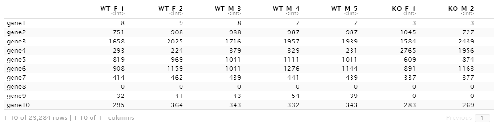

So assuming that your data is now in the expected format as described in the previous article, now
it's time to actually present the data in a visual way that makes what kinds of samples you have easier to see.
This pie chart shows the distribution of your samples by some characteristic from the sample description (gender,
experiment/control group, which data set, etc)
library(ggplot2) #data-visualization package
library(dplyr) #data-frame manipulation
col <- "Gender" #characteristic from sample description
pie_table <- as.data.frame(table(sample_desc[col])) #table just including column of interest with counts per category
colnames(pie_table) <- c("type", "freq")
ggplot(pie_table, aes(x = "", y=freq, fill = type)) +
geom_bar(width = 1, stat="identity")+
geom_text(aes(label=freq), size=3,
position = position_stack(vjust = 0.5))+
coord_polar(theta = "y")+
theme_void() +
labs(x = NULL, y = NULL, subtitle = paste(nrow(sample_desc), "samples total"))+
scale_fill_discrete(name = col) +
ggtitle(paste("Samples by", col)) +
theme(plot.title = element_text(hjust = 0.5))

Especially with smaller data sets (roughly less than 20 samples) it can often be helpful to rename the samples from the default unique identifiers to something more descriptive. For example, if sample A020 is WT and female, it could be renamed to WT_F_1 for ease of reference later. This is completely optional.
new_colnames <- character()
for (i in 1:ncol(data)){
tempColName <- names(data)[i]
new_colnames[i] <- paste(sample_desc[tempColName, "exp.control"], "_", sample_desc[tempColName, "Gender"], "_",
sample_desc[tempColName, "Num"], sep = "")
}
rownames(sample_desc) <- new_colnames
colnames(data) <- new_colnames
